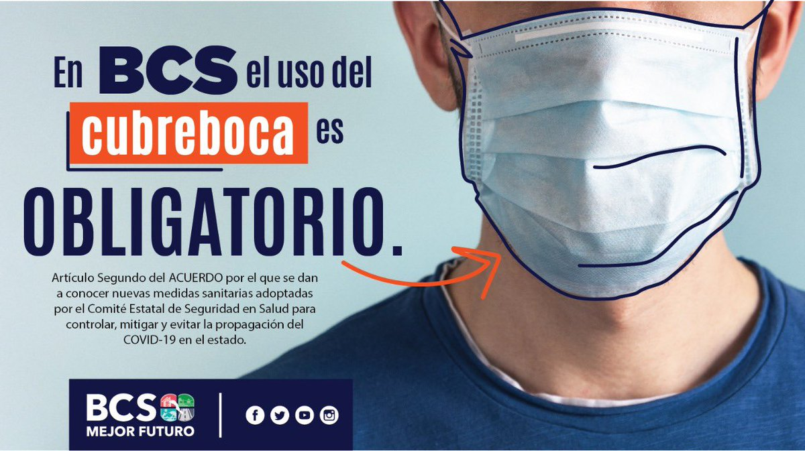

Conoce más sobre el acecho
Toda la información que necesitas conocer.

Galeria de imagenes
Visita nuestra galeria de imagenes.

Denuncia en la PGJE BCS
Para levantar una denuncia, visita la PGJE en LA PAZ, recuerda que el uso de cubreboca es obligatorio en todo el estado